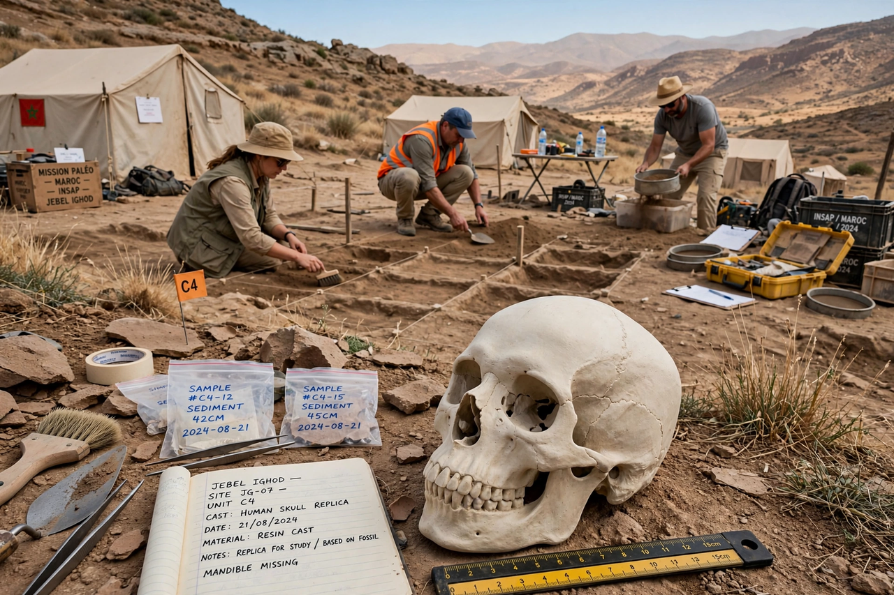

Jebel Irhoud

| Jebel Irhoud | |
| Location | Near Safi, Morocco |
|---|---|
| Discovered | 1960 (during barite mining) |
| Key fossils | Irhoud 1–5 and later finds (Irhoud 10, 11, 21, 22) |
| Age of key fossils | c. 300,000 years (dated 2017) |
| Significance | Oldest known fossils attributed to Homo sapiens |
Jebel Irhoud is an archaeological cave site about 50 km southeast of Safi in Morocco. It yielded fossil remains of early Homo sapiens which, when redated in 2017 to approximately 300,000 years old, became the oldest securely dated fossils of our species — pushing back the origin of modern humans by about 100,000 years and shifting attention from East Africa to a pan-African origin.
Discovery and dating
Miners quarrying barite broke into the cave in 1960, and workers recovered a skull (Irhoud 1) in 1961. Early estimates made the fossils about 40,000 years old, and they were often classified as African Neanderthals. Excavations led by Jean-Jacques Hublin from 2007 uncovered more fossils, flint tools of Middle Stone Age type, and hearths. In 2017, thermoluminescence dating of burnt flint gave an age of about 300,000 years, confirmed by other methods.
The fossils
The Irhoud people combined a modern-looking, gracile face — small brow ridges, a short, retracted face tucked beneath the braincase — with an elongated, archaic braincase lacking the globular shape of living humans. Brain size was comparable to ours (about 1,300–1,400 cm³). Their tools resemble the Levallois-based industries of contemporary Eurasian Neanderthals, and their diet included gazelle, zebra, and other game.
Significance
Jebel Irhoud supports a model in which Homo sapiens evolved across interconnected populations throughout Africa, rather than in a single East African "garden of Eden". Together with fossils from Omo Kibish (Ethiopia, c. 233,000 years) and Florisbad (South Africa, c. 259,000 years), it indicates that recognisably modern facial morphology appeared early and widely while the modern brain shape evolved later, within the last 100,000 years.
See also: Homo erectus, Denisovans